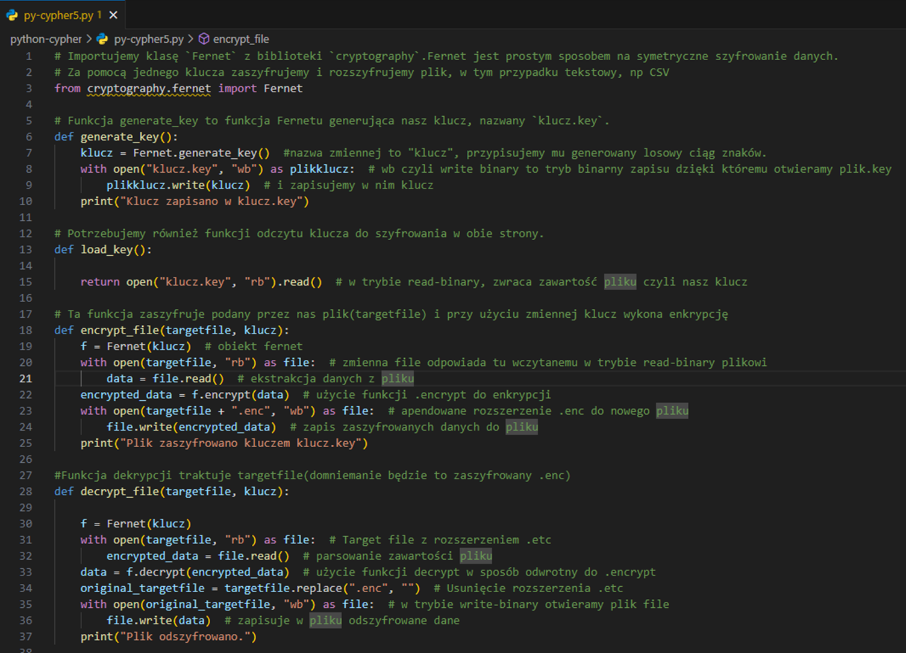

Załóżmy, że mamy zwykły katalog z plikami: notatki, CSV z danymi poufnymi,
może jakiś eksport z aplikacji. Zróbmy więc mały program w Pythonie, który
jednym poleceniem potrafi plik zaszyfrować, a drugim – odszyfrować.
W projekcie wykorzystujemy bibliotekę cryptography
i narzędzie Fernet. Wygenerujemy klucz którym zaszyfrujemy i
odszyfrujemy dane. Program jest celowo prosty – działa z
terminala, nie ma bazy danych, nie udaje menedżera haseł.
Co znajdziesz poniżej
pełny kod skryptu py-cypher5.py,
opis funkcja po funkcji: klucz, szyfrowanie, deszyfrowanie, menu,
przykładowy plik CSV do testów,
konkretne komendy terminalowe i zrzut ekranu z działania.
Kod i użycie skryptu krok po kroku
Przejdźmy od pełnego listingu, przez omówienie poszczególnych funkcji,
aż do uruchomienia gotowego narzędzia na realnym pliku.
Pełny skrypt py-cypher5.py
Najpierw spójrzmy na całość – to jeden plik z kilkoma funkcjami
i prostym menu tekstowym.

Widok całego skryptu w edytorze – od importu Fernet do prostego menu CLI.
Python – pełny skrypt
# Importujemy klasę Fernet z biblioteki cryptography.
# Fernet jest prostym sposobem na symetryczne szyfrowanie danych:
# jednym kluczem szyfrujemy i odszyfrowujemy plik (np. CSV).
from cryptography.fernet import Fernet
def generate_key():
"""
Generuje nowy klucz Fernet i zapisuje go w pliku klucz.key.
"""
klucz = Fernet.generate_key()
with open("klucz.key", "wb") as plikklucz:
plikklucz.write(klucz)
print("Klucz zapisano w klucz.key")
def load_key():
"""
Wczytuje klucz z pliku klucz.key w trybie binarnym.
"""
return open("klucz.key", "rb").read()
def encrypt_file(targetfile, klucz):
"""
Szyfruje plik targetfile przy użyciu podanego klucza.
Wynik zapisuje jako plik o nazwie targetfile + '.enc'.
"""
f = Fernet(klucz)
with open(targetfile, "rb") as file:
data = file.read() # odczyt danych z pliku (bajty)
encrypted = f.encrypt(data) # szyfrowanie
with open(targetfile + ".enc", "wb") as file:
file.write(encrypted) # zapis zaszyfrowanej zawartości
print(f"Plik {targetfile} zaszyfrowano do {targetfile}.enc")
def decrypt_file(targetfile, klucz):
"""
Deszyfruje plik targetfile (oczekiwany plik .enc)
i zapisuje odszyfrowany plik bez rozszerzenia .enc.
"""
f = Fernet(klucz)
with open(targetfile, "rb") as file:
encrypted = file.read() # odczyt zaszyfrowanych danych
decrypted = f.decrypt(encrypted) # odszyfrowanie
original = targetfile.replace(".enc", "")
with open(original, "wb") as file:
file.write(decrypted) # zapis odszyfrowanego pliku
print(f"Plik {targetfile} odszyfrowano do {original}")
if __name__ == "__main__":
print("1: Generuj klucz")
print("2: Szyfruj plik")
print("3: Deszyfruj plik")
choice = input("Wybierz opcję: ")
if choice == "1":
generate_key()
elif choice in ["2", "3"]:
klucz = load_key()
targetfile = input("Podaj nazwę pliku: ")
if choice == "2":
encrypt_file(targetfile, klucz)
else:
decrypt_file(targetfile, klucz)
else:
print("Błąd: wybierz 1, 2 lub 3.")
Struktura pliku i odpowiedzialności funkcji
Import i kontekst
Na samej górze importujemy Fernet z biblioteki
cryptography. Cały skrypt jest zbudowany wokół tego
jednego prymitywu – reszta to tylko obsługa plików i prosty interfejs.
generate_key() – jednorazowe wygenerowanie klucza
Funkcja generate_key() odpowiada za stworzenie klucza,
który będzie później używany zarówno do szyfrowania, jak i deszyfrowania.
W środku:
Fernet.generate_key() – prosimy bibliotekę o bezpieczny klucz,
otwieramy plik klucz.key w trybie binarnym
("wb") i zapisujemy bajty bez żadnych modyfikacji,
wypisujemy krótki komunikat, żeby użytkownik widział, że operacja się powiodła.
W praktyce ta funkcja jest wywoływana rzadko – typowo raz na nowy „zestaw” danych.
load_key() – odczyt klucza z dysku
load_key() to komplementarna operacja: otwieramy
klucz.key w trybie "rb" i zwracamy jego zawartość.
Funkcja nie ma żadnych efektów ubocznych; jej jedynym zadaniem jest dostarczenie
bajtów klucza kolejnym funkcjom.
tworzymy obiekt Fernet na podstawie przekazanego klucza,
otwieramy plik targetfile w trybie binarnym i czytamy całą zawartość,
wykonujemy f.encrypt(data), co daje zaszyfrowany, uwierzytelniony blob,
tworzymy nowy plik o nazwie targetfile + ".enc",
zapisujemy wynik szyfrowania na dysk i logujemy krótką informację w terminalu.
Skrypt nie usuwa oryginalnego pliku – decyzja o tym, czy kasować „jawną” wersję,
jest pozostawiona użytkownikowi / procesowi, który wywołuje narzędzie.
decrypt_file() – operacja odwrotna
decrypt_file(targetfile, klucz) bierze plik
zaszyfrowany (np. pliktest.csv.enc) i próbuje odtworzyć wersję jawną:
znów tworzymy obiekt Fernet z danego klucza,
wczytujemy cały zaszyfrowany plik do pamięci,
wykonujemy f.decrypt(encrypted) – jeśli klucz nie pasuje lub dane są
uszkodzone, dostaniemy wyjątek,
konstruujemy nazwę wyjściową przez replace(".enc", ""),
zapisujemy odszyfrowane bajty jako zwykły plik.
Dzięki konwencji nazewniczej (.enc) odzyskujemy tę samą nazwę, którą
plik miał przed szyfrowaniem, bez trzymania dodatkowych metadanych.
Blok if __name__ == "__main__" – prosty interfejs CLI
Na końcu pliku mamy cienką warstwę interfejsu tekstowego – kilka
print() i input(), które spinają funkcje w jedno narzędzie.
Python – menu
if __name__ == "__main__":
print("1: Generuj klucz")
print("2: Szyfruj plik")
print("3: Deszyfruj plik")
choice = input("Wybierz opcję: ")
if choice == "1":
generate_key()
elif choice in ["2", "3"]:
klucz = load_key()
targetfile = input("Podaj nazwę pliku: ")
if choice == "2":
encrypt_file(targetfile, klucz)
else:
decrypt_file(targetfile, klucz)
else:
print("Błąd: wybierz 1, 2 lub 3.")
Logika wyboru jest celowo prosta:
opcję 1 obsługuje samo generate_key(),
dla opcji 2 i 3 najpierw wczytujemy klucz
(load_key()), a dopiero potem prosimy o nazwę pliku,
dalszy przepływ przekazujemy do encrypt_file() lub
decrypt_file(),
dowolny inny wybór kończymy komunikatem o błędzie – bez prób zgadywania
intencji użytkownika.
Przygotowanie danych testowych
Do demonstracji używamy prostego pliku CSV – wystarczy zapisać go w tym samym
katalogu co skrypt py-cypher5.py.
W katalogu pojawia się klucz.key. W prawdziwym systemie
taki sekret najczęściej trafia do menedżera haseł / KMS; tutaj
zostaje lokalny plik, żeby skupić się na mechanice szyfrowania.
Krok 2 – szyfrowanie pliku
Skoro klucz już mamy, możemy zaszyfrować nasz roboczy CSV: